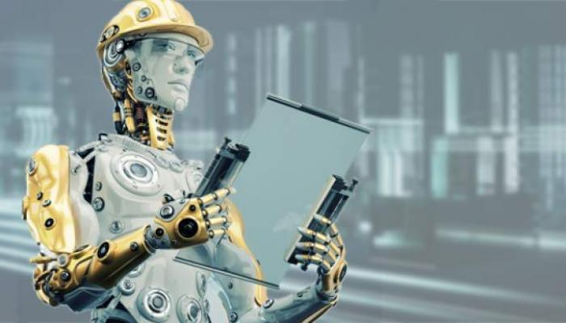

advantages and disadvantage of artificial intelligence page
links:

Advantages of artificial intelligence:
There are many positives and benefits that result from the use of artificial intelligence, and among these benefits are the following:
- Permanent work: This is through the ability of machines to perform their work continuously without feeling tired or bored, and the stability of their ability to produce at all times without regard to the time or circumstances surrounding the work.
- Important applications for daily life: Artificial intelligence provides many applications that have become important to human daily life, and the smartphone and its various smart systems, such as the GPS, are one of the most prominent examples of human need for various artificial intelligence applications.
- Using artificial intelligence to provide services:many large organizations have relied on artificial intelligence systems to provide services to their customers instead of the traditional employee.
- Getting rid of repetitive work: Artificial intelligence systems can be used to carry out routine work that requires the same work mechanism every time, and these systems can also be used to carry out work that may pose a threat to human life.
- Providing medical care: There are many artificial intelligence systems that provide medical care to humans, through surgery simulators, or those applications that help detect neurological disorders or those that allow the patient to know the side effects of drugs, and it is necessary to mention the applications of radiosurgery. Which helped the possibility of eradicating tumors without causing any harm to the surrounding healthy tissues.
- The ability to process a huge amount of data: AI systems can handle, store and process a huge amount of data.
- Accuracy and reduce the margin of error: The human use of artificial intelligence systems contributes to reducing the percentage of error that may occur during the implementation of tasks, in addition to the great accuracy in performing these tasks.
- Doing difficult jobs:AI systems can do things that humans might not be able to do, such as excavating and exploring hard-to-reach places like the ocean floor.
- Lack of emotion arbitration:unlike humans, artificial intelligence is not affected by any emotions that may hinder the workflow. These systems are not moody, but rather work according to a logical way of thinking, which makes them able to make the right decisions within a short time.
Disadvantages of artificial intelligence:
There are many negatives that result from the use of artificial intelligence, including the following:
- The high cost of using, upgrading and maintaining artificial intelligence systems.
- The lack of awareness of artificial intelligence systems of human ethics and values , these systems lack the ability to make appropriate judgments, they are only interested in implementing what they were designed for without looking at what is right and wrong in carrying out tasks.
- The inability of artificial intelligence systems to change and develop their work system if they receive the same data every time, and this may render them useless at a certain stage.
- The lack of artificial intelligence systems to respond to conditions and changes that may occur in the work environment, and their inability to be as creative and inventive as humans are.
- Many workers and employees have been laid off as a result of using artificial intelligence systems and relying on them instead of humans.